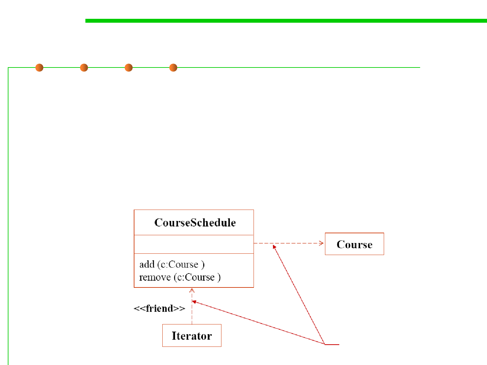

5.1 Metrics, Morphology and External Observations of Reusability
Approaches of reusing a class: use
▪ The simplest form of using classes is calling its methods;
▪ This form of relationship between two classes is called “uses-a”
relationship
▪ Uses (in which one class makes use of another without actually
incorporating it as a property. -it may, for example, be a parameter
or used locally in a method 方法参数或者局部变量)
依赖